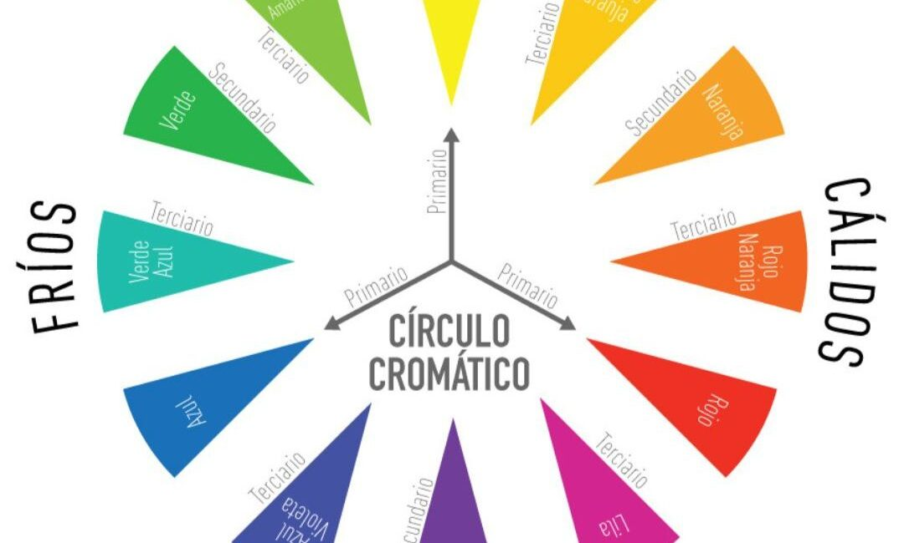
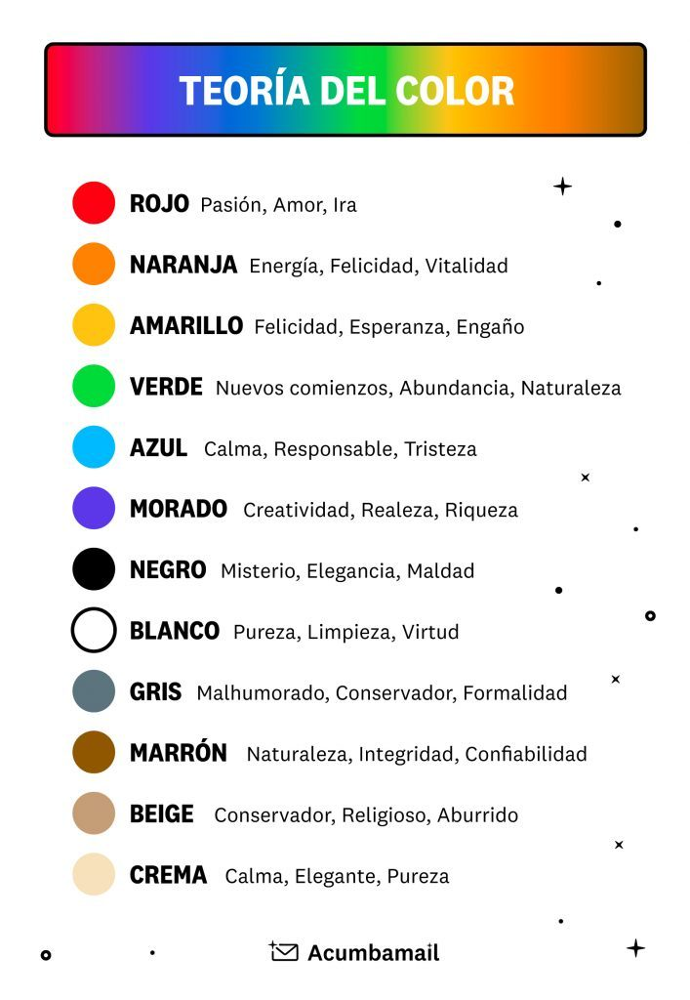

Se conoce como Teoría del color a un conjunto de reglas básicas que rigen la mezcla de colores para conseguir efectos deseados, mediante la combinación de colores o pigmentos. Es un principio de gran importancia en el diseño gráfico, la pintura, la fotografía, la imprenta y la televisión, entre otras áreas visuales.es aquella que se utiliza para explicar cómo se generan los colores que conocemos. Podemos encontrar dos teorías al respecto, estas son la de la síntesis aditiva y la de la síntesis sustractiva. Ahora bien, el motivo por el cual distinguimos los colores tiene su razón de ser debido a los rayos de luz que rechazan los objetos. Es decir, el ojo humano capta los rebotes de luz con diferentes longitudes de onda que no son absorbidas por el objeto. Estas son las que le dan color. Si el objeto fuera invisible, en ese caso, la luz lo atravesaría por completo y no veríamos nada.
Todos los matices o colores que percibimos poseen tres atributos básicos:
•Matiz.— También llamado por algunos croma, o tono, es el color en sí mismo, es el atributo que nos permite diferenciar a un color de otro, por lo que podemos designar cuando un matiz es verde, violeta o naranja.
•Luminosidad o valor.— Es la intensidad lumínica de un color (claridad/oscuridad). Es la mayor o menor cercanía al blanco o al negro de un color determinado. A menudo damos el nombre de rojo claro a aquel matiz de rojo cercano al blanco, o de rojo oscuro cuando el rojo se acerca al negro.
•Saturación.— es, básicamente, pureza de un color, la concentración de gris que contiene un color en un momento determinado. Cuanto más alto es el porcentaje de gris presente en un color, menor será la saturación o pureza de este y por ende se verá como si el color estuviera «sucio» u opaco; en cambio, cuando un color se nos presenta lo más puro posible (con la menor cantidad de gris presente) mayor será su saturación. En caso de que se mezclen los colores opuestos en el círculo cromático se obtienen grises opuestos a la saturación, a lo que se le llama neutralización.
Las teorías modernas del uso del color determinan que sus propiedades son dos: matiz y luminosidad El matiz tiene que ver con el tipo de color: tierra siena tostada, verde, negro marfil, blanco titanio, rosa, etc. La luminosidad es la cantidad de luz que cada color tiene y es posible de ser diferenciada en oposición a otros colores, por ejemplo, un amarillo es más claro que un azul o un verde más claro que un marrón. La saturación bien entendida tiene que ver con la cantidad de materia que se aplica sobre una superficie, por ende saturar significa colmar una superficie con pigmento. El agregado de gris a los colores como forma de saturar, no hace otra cosa que obtener un nuevo color producto de la mezcla. Puede probarse por experimentación. Por ende un color, inclusive al que se le agregara gris, puede saturar una superficie con mayor o menor efectividad dependiendo de la técnica utilizada y de la calidad de los materiales con los que se ha fabricado. Por ejemplo, la técnica de acuarela tiene menor capacidad para saturar que la del acrílico.
